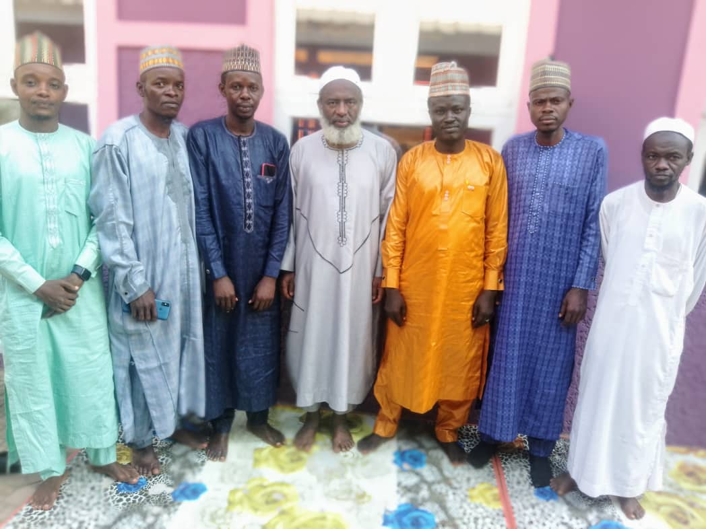

Posted on November 20, 2024
The prominent cleric, Dr. Sheikh Ahmed Mahmud Gumi has expressed commitment to supporting the Arewa Progressive Eagle Movement (APEM) in its efforts to proffer feasible solutions to challenges bedeviling the Northern Nigeria. The Islamic Cleric made the commitment when a delegation of APEM led by her Chairman and Chief Executive Officer, Babangida Ibrahim Dauda visited him in Kaduna. The visit was part of the ongoing familiarisation drive embarked upon by the special delegation of the organisation.
The delegation took time during the visit to intimate Sheikh Ahmed Gumi of its activities which include fighting desertification and other ecological challenges; Mango seed and shear butter value change and waste management across the nineteen Northern States.
Impressed by the thoughts and initiatives of founders of APEM, Sheikh Gumi accordingly admonished APEM on how to improve on its programmes and pledged his support to the organisation.
He further charged leaders and members of APEM to be focused and determined in pursuing their goals and objectives irrespective of any daunting distraction or hurdles that they may encounter in the noble project they have embarked upon.
The interactive session was fruitful as the desired responses were elicited from the prominent cleric.
APEM continues her courtesy calls to relevant stakeholders in the Region as part of efforts to introduce the prolific organisation to the stakeholders and get their nodes.
Signed:
Adamu Maikasuwa Saluwe
Director, Public Affairs and Corporate Communications
20th November, 2024